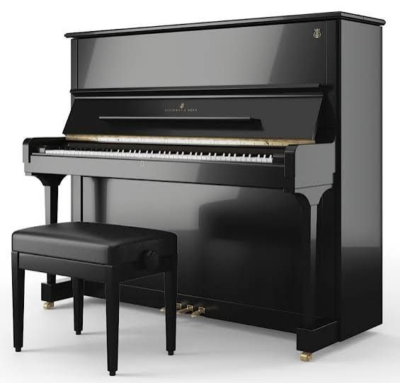

Pieces below referenced from: ABRSM Piano Syllabus (Grade 8 Section)
| Composer | Piece | From |
|---|---|---|
| D. Scarlatti | Sonata in D, Kp. 443, L. 418 | ABRSM Grade 8 A Pieces |
| Beethoven | Adagio cantabile (2nd movt from Sonata in C minor ‘Pathétique’, Op. 13) | ABRSM Grade 8 B Pieces |
| Schubert | Impromptu in A- (No. 2 from Four Impromptus, Op. 142, D. 935) | ABRSM Grade 8 B Pieces |
| Trad. Irish | Danny Boy, arr. Iles | ABRSM Grade 8 C Pieces |

Above; Image of a steinway piano from Piano Price Point website